Al je antwoorden worden gewist en je begint opnieuw. Weet je het zeker?
Jouw resultaten
Start van het leven · 2e Toetsmoment 2016‑2017
—
/ 63
0
Goed
0
Fout
0
Niet beantwoord
Vraag 1
Kies de juiste alternatieven.
Vul de zin aan: Secundaire spermatocyten bezitten chromosomen.
Vraag 2
Zie afbeelding 1. Je ziet een microscopische opname. Waar is dit een doorsnede van?
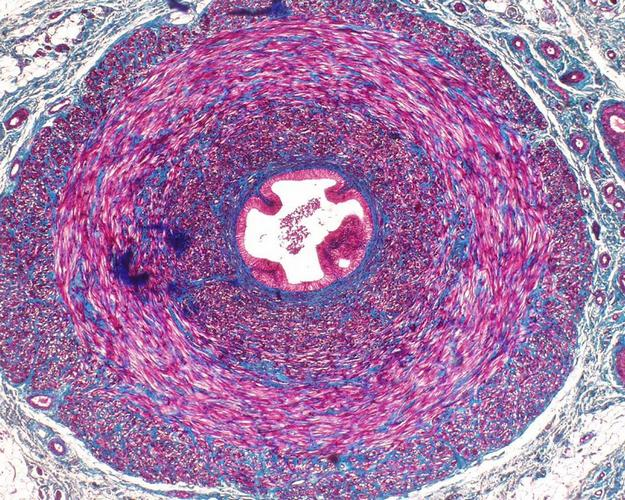
Vraag 3
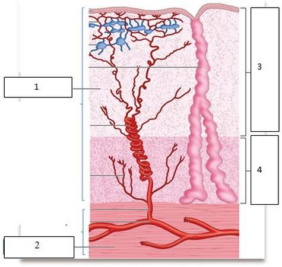
Zie afbeelding 2. Je ziet een schematische weergave van de wand van de uterus. Welke van de volgende structuren worden met de cijfers 1 t/m 4 aangegeven?
Sleep een optie naar de bijbehorende rij, of tik eerst op een kaart en dan op een rij.
1
Sleep hier naartoe
2
Sleep hier naartoe
3
Sleep hier naartoe
4
Sleep hier naartoe
Vraag 4
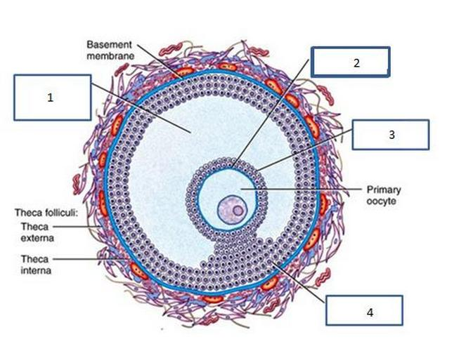
Zie afbeelding 3. Je ziet een schematische weergave van een sprongrijpe follikel. Welke structuren worden met de cijfers 1 t/m 4 aangegeven?
Sleep een optie naar de bijbehorende rij, of tik eerst op een kaart en dan op een rij.
1
Sleep hier naartoe
2
Sleep hier naartoe
3
Sleep hier naartoe
4
Sleep hier naartoe
Vraag 5
Met welk epitheel is de endocervix grotendeels bekleed?
Vraag 6
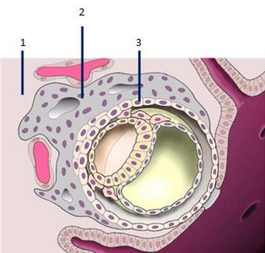
Zie afbeelding 4. Je ziet een schematische weergave van de implantatie van een embryo. Welke structuren worden met de cijfers 1 t/m 3 aangegeven?
Sleep een optie naar de bijbehorende rij, of tik eerst op een kaart en dan op een rij.
1
Sleep hier naartoe
2
Sleep hier naartoe
3
Sleep hier naartoe
Vraag 7
Kies de juiste alternatieven.
Bij een 30-jarige primair subfertiele man met azoöspermie is het serum-FSH evident verhoogd en het testisvolume 8 ml. In deze casus is sprake van azoöspermie, waarvoor als behandeling in aanmerking komt .
Vraag 8
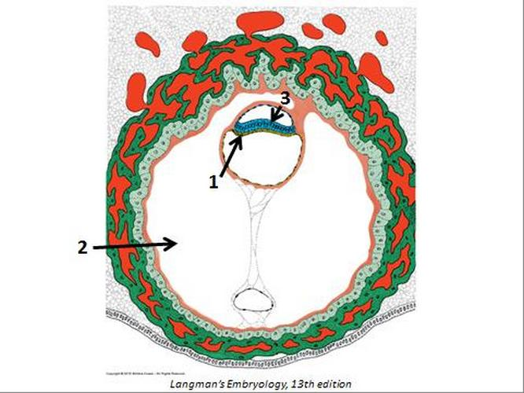
Zie afbeelding 5. Welke structuren worden in de afbeelding aangegeven met de cijfers 1, 2 en 3?
Sleep een optie naar de bijbehorende rij, of tik eerst op een kaart en dan op een rij.
1
Sleep hier naartoe
2
Sleep hier naartoe
3
Sleep hier naartoe
Vraag 9
Uit welk embryonaal kiemblad ontwikkelt zich de neurale buis?
Vraag 10
Hoe wordt het proces genoemd waarbij de drie-lagige kiemschijf gevormd wordt?
Vraag 11
Zie afbeelding 6. Welk deel van het mesoderm is in de afbeelding bij de pijl met GEEL weergegeven?
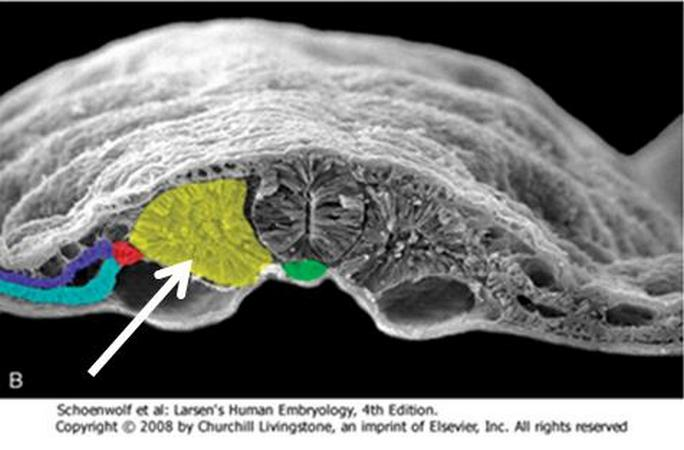
Vraag 12
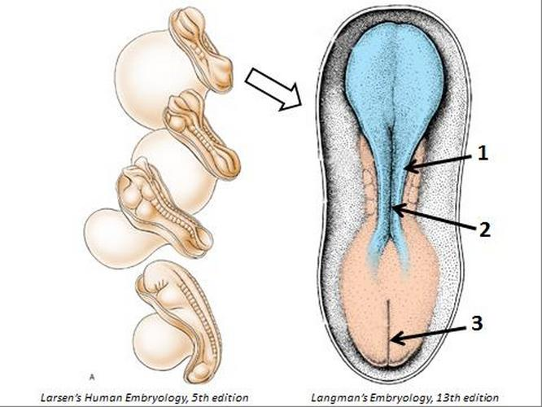
Zie afbeelding 7. Welke structuren worden in de afbeelding aangegeven met de cijfers 1 t/m 3?
Sleep een optie naar de bijbehorende rij, of tik eerst op een kaart en dan op een rij.
1
Sleep hier naartoe
2
Sleep hier naartoe
3
Sleep hier naartoe
Vraag 13
Welke structuur vormt de afscheiding tussen het foramen ischiadicum majus en minus?
Vraag 14
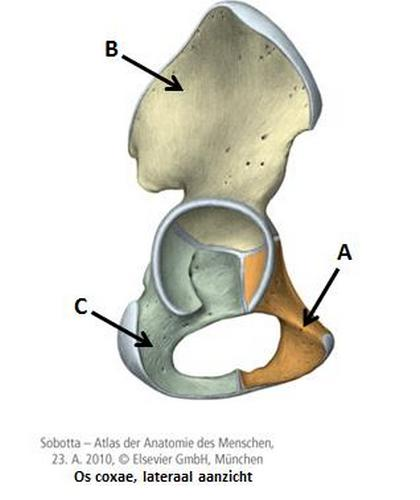
Het os coxae bestaat uit drie gefuseerde botdelen die allemaal samenkomen in het acetabulum. Zie afbeelding 8. Welk botdeel is aangeduid met de letters A, B en C?
Sleep een optie naar de bijbehorende rij, of tik eerst op een kaart en dan op een rij.
A (oranje)
Sleep hier naartoe
B (geel)
Sleep hier naartoe
C (grijsgroen)
Sleep hier naartoe
Vraag 15
Zie afbeelding 9. Welke structuur in de afbeelding is aangegeven met de pijl?
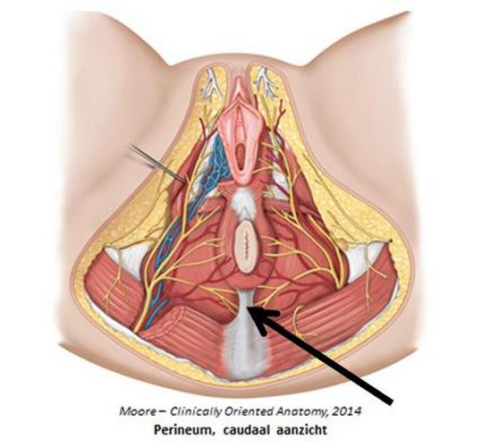
Vraag 16
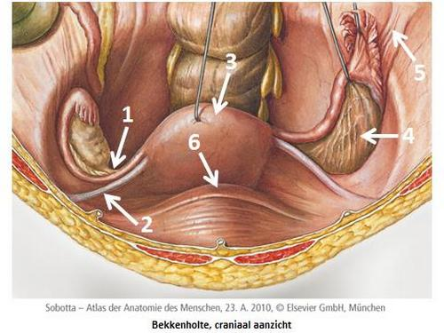
Zie afbeelding 10. Met welk cijfer worden de volgende structuren in de afbeelding aangegeven?
Sleep een optie naar de bijbehorende rij, of tik eerst op een kaart en dan op een rij.
fundus uteri
Sleep hier naartoe
lig. ovarii proprium
Sleep hier naartoe
lig. suspensorium ovarii
Sleep hier naartoe
lig. teres uteri
Sleep hier naartoe
Vraag 17
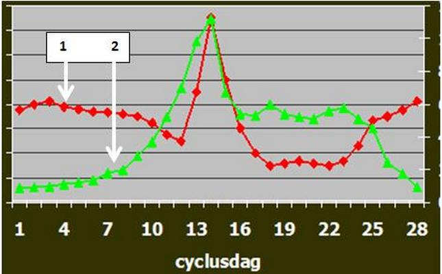
Kies de juiste alternatieven.
In grafiek 1 is het verloop van de serumspiegels van twee hormonen uitgezet gedurende een normale menstruele cyclus. De rode lijn (= 1) geeft het serumgehalte per cyclusdag weer van: . De van dit hormoon in de leidt tot selectie van eicellen voor de eerstvolgende ovulatie.
Vraag 18
CASUS — Een stel is in het kader van subfertiliteitsonderzoek verwezen naar een centrum. Mevrouw is nu ongeveer een week over tijd, maar dat is zij bijna altijd: vaak duurt het zelfs een paar weken voordat zij weer eens bloed verliest. Alle zwangerschapstesten waren altijd negatief. De BTC die ze bijhield is te zien in grafiek 2. De fertiliteitsarts maakt een vaginale echo van de eierstokken, die beide hetzelfde beeld laten zien als op afbeelding 11.
Welke diagnose is in deze casus het meest waarschijnlijk? Deze patiënte …
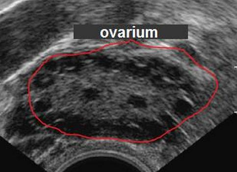
Vraag 19
Hieronder zie je de anamneses van vier vrouwen tussen 15 en 45 jaar die buikpijn hebben gekregen. Welke waarschijnlijkheidsdiagnose past bij welke anamnese?
Sleep een optie naar de bijbehorende rij, of tik eerst op een kaart en dan op een rij.
a. De pijn begon een dag of vijf geleden na een vrijpartij zonder condooms. De pijn wordt steeds erger.
Sleep hier naartoe
b. Daarnet opeens tijdens een potje tennis, toen ik me heel snel bukte om nog net een backhand te slaan.
Sleep hier naartoe
c. Een paar uur geleden, met even een heel gemene scherpe pijn rechtsonder in mijn buik, die maar een kwartiertje duurde; vorige maand had ik dezelfde pijn aan de andere kant.
Sleep hier naartoe
d. Vannacht ergens bij mijn navel en het zit nu precies hier, rechtsonder.
Sleep hier naartoe
Vraag 20
Welke problematiek is het meest geassocieerd met endometriosis externa? Kies uit onderstaande lijst de drie problemen die het meest passend zijn.
Meerdere antwoorden mogelijk.
Vraag 21
Een 26-jarige vrouw heeft zoveel pijn bij de menstruatie dat zij daar vaak haar werk voor moet verzuimen. Sinds een paar maanden is er ook een hinderlijke pijn bij het plassen bijgekomen, diep onder in haar buik. Het is geen branderig gevoel en er is geen bloederige urine; cystitis is meermaals uitgesloten. Als de menstruatie voorbij is houdt de dysurie op tot ze opnieuw begint te menstrueren. Lichamelijk onderzoek (incl. speculum-, vaginaal- en rectovaginaal toucher) toont geen afwijkingen. Welk specifiek aanvullend diagnostisch onderzoek is nu als eerste geïndiceerd?
Vraag 22
Bekijk de volgende aspecten van het glucosemetabolisme in de tweede helft van een normale zwangerschap, in vergelijking met een niet-zwangere vrouw.
insuline resistentie
bloed glucose spiegel
glucose in de urine
nierdrempel voor glucose
Vraag 23
Bekijk de volgende vier hematologische of klinisch-chemische bepalingen bij een gezonde zwangere vrouw in een fysiologisch verlopende zwangerschap, in vergelijking met een gezonde niet-zwangere vrouw.
bezinking (BSE)
Ht
serum-kaliumgehalte
trombocyten aantal
Vraag 24
Een 20-jarige vrouw is voor het eerst zwanger met een amenorroe van ongeveer 8 weken. Wegens ernstige hyperemesis gravidarum moet zij worden opgenomen voor intraveneuze vochttoediening. Wat moet er, naast het gangbare infuus met vocht, ook nog worden gesuppleerd?
Vraag 25
Kies de juiste alternatieven.
(“Gemaskeerde”) Diabetes Mellitus type 2 is pathofysiologisch met “zwangerschapssuiker” (GDM) wat betreft het risico voor de foetus op ernstige aangeboren afwijkingen, zoals een neuraalbuisdefect. zit in waardoor de foetus dit risico loopt.
Vraag 26
CASUS — Een zwangere gravida 2 para 1 met een kind van drie jaar en nu met amenorroe van 30 weken is in de loop van de dag harde buiken gaan voelen die geen pijn doen. Er is geen slijm-, bloed- en/of vochtverlies en geen medische indicatie afgegeven. De zwangerschap is tot nu toe zonder problemen verlopen. De verloskundige denkt na enkele vragen aan Braxton-Hicks-contracties.
Waarom is dat in deze casus inderdaad van toepassing?
Vraag 27
CASUS (er volgen twee vragen) — Een 31-jarige G1 P0 ligt al enkele dagen opgenomen wegens steeds weer wat pijnloos vaginaal bloedverlies (nooit veel, enkele helderrode druppeltjes). Zij heeft een amenorroe van 33 weken bereikt. Bij opname is een vaginale echo van het onderste uterussegment verricht (zie afbeelding 12 en 13). Op het toilet krijgt patiënte een paar krampen in de onderbuik, waarna zij opeens veel helderrood bloed met grote stolsels verliest. De met spoed gewaarschuwde arts ziet foetale hartactie van ongeveer 100 slagen/min; de bloeddruk van moeder is 90/50 mmHg met een pols van 120/min.
Wat is de waarschijnlijkheidsdiagnose in deze casus?
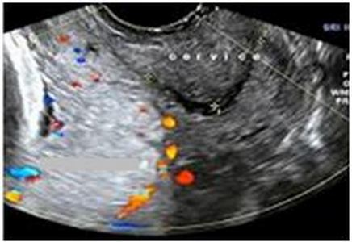
Vraag 28
CASUS (tweede vraag) — Zelfde patiënte: 31-jarige G1 P0, amenorroe 33 weken, pijnloos vaginaal bloedverlies, nu acuut veel helderrood bloed met stolsels, foetale hartactie ~100/min, bloeddruk moeder 90/50 mmHg, pols 120/min. De differentiaaldiagnose van bloedverlies in de tweede helft van de zwangerschap is: beginnend in partu met sterk tekenen / totale abruptio placentae / bloedende placenta praevia totalis.
Welk beleid sluit in deze casus het beste aan bij de genoemde differentiaaldiagnose?
Vraag 29
Kies de juiste alternatieven.
Welke omstandigheden doen zich gelijktijdig voor waardoor een baring op gang komt? De CRH-productie . De oestrogenenproductie . De progesteronproductie .
Vraag 30
Welke betekenis heeft het als bij onderzoek het foetale fibronectine in vaginaalvocht negatief is? Dat betekent dat …
Vraag 31
Kies de juiste alternatieven.
Bij een volledige en goedverlopende placentatie behoort: van compliantie van de spiraalarteriën, de doorstromingscapaciteit en van de lokale bloeddruk.
Vraag 32
Gevolgen van slechte placentatie kunnen ernstig zijn voor de zwangere, haar kind én de placenta. Bij welke van de drie is het beschreven gevolg juist?
Vraag 33
Kies de juiste alternatieven.
Bij slecht functionerend trofoblast wordt geproduceerd, met als gevolg voor de zwangere: .
Vraag 34
Een virale infectie met bijvoorbeeld Cytomegalievirus tijdens de eerste helft van de zwangerschap veroorzaakt bij een aangedane foetus onder meer groeirestrictie. De biometrie wordt uitgedrukt in p-waarden (percentiel). Hoe zal het echografische groeipatroon vanaf expositie aan het virus er bij groeirestrictie na enkele weken uitzien?
Vraag 35
CASUS — De vriend van een 26-jarige vrouw meldt via 112 dat zijn partner zojuist opeens heel erge pijn onder in haar buik aangaf en vervolgens flauwviel. Ze is snel weer bijgekomen, maar wil niet blijven liggen omdat dan haar schouder zo'n pijn doet; rechtop zit is die pijn veel minder. Elke beweging doet erg veel pijn in de buik. Ze ziet lijkbleek en dreigt opnieuw flauw te vallen.
Welke twee opties van de vijf vind je het meest waarschijnlijk, gelet op het acute optreden en het speciale pijnpatroon?
Meerdere antwoorden mogelijk.
Vraag 36
Kies de juiste alternatieven.
De WAZ (Wet Afbreking Zwangerschap) legt procedurele voorwaarden vast bij abortus provocatus. Een voorwaarde betreft “de noodsituatie van de vrouw”, waarbij samen vaststellen of hiervan sprake is. Informatie geven door de arts over andere oplossingen dan abortus provocatus is volgens de WAZ .
Vraag 37
Een kind heeft Noonan-syndroom. De ogen tonen mede de daarvoor kenmerkende verschijnselen. Welke twee kenmerken zijn dat?
Meerdere antwoorden mogelijk.
Vraag 38
Vandaag komt Thomas (zie afbeelding 15) op het spreekuur van de klinisch geneticus. Hij is verwezen wegens de grote lengte voor zijn leeftijd (+3 SD). De kindercardioloog heeft een milde verwijding van de aortawortel vastgesteld. Bij lichamelijk onderzoek constateert de klinisch geneticus opmerkelijk soepele gewrichten en andere kenmerken zoals op de foto.
Welke diagnose staat bovenaan de differentiaaldiagnose?
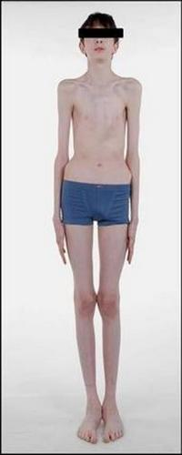
Vraag 39
Kies de juiste alternatieven.
Lumbalisatie van Sacrale 1 berust op hetzelfde principe als , namelijk , welke veroorzaakt wordt door een in een homeobox-gen.
Vraag 40
Kies de juiste alternatieven.
De embryonale ontwikkeling van vingers en tenen staat mede onder invloed van het signaalgen Sonic Hedgehog (SHH). SHH beïnvloedt de Zone of Polarising Activity (ZPA) die gelegen is aan de van de vier embryonale extremiteitsknoppen. In de twee voorste wordt daardoor de ontwikkeling van geïnduceerd.
Vraag 41
Kies de juiste alternatieven.
Een deel van de immunotolerantie tijdens de zwangerschap wordt als volgt verklaard: een van de unieke MHC-klasse-I-moleculen “HLA-G”, dat op wordt gepresenteerd, de activiteit van , waardoor cytotoxische activiteit wordt teruggedrongen.
Vraag 42
In het kader van de combinatietest wordt een nekplooimeting (NT-meting) verricht. Die blijkt verdikt te zijn. Selecteer uit de vijf opties de twee omstandigheden die geassocieerd worden met een verdikte nekplooi.
Meerdere antwoorden mogelijk.
Vraag 43
Hieronder staan stoffen die samenwerken om myocyten van de uterus in contractie te brengen. Welke stof zorgt via zijn receptor voor contractie van deze myocyten?
Vraag 44
CASUS — Bij een zwangere die à terme is breken de vliezen spontaan. Ze is contractiel, maar het is de vraag of zij niet “een vroege start” heeft.
Wanneer mag mevrouw, nu haar vliezen zijn gebroken, echt “in partu” verklaard worden?
Vraag 45
Wanneer er utero-placentaire insufficiëntie bestaat, kan de foetus zichzelf nog een tijdlang tegen toenemend zuurstofgebrek beschermen. Van welke mogelijkheden maakt de foetus achtereenvolgens gebruik bij toenemende zuurstofnood? (1: brainsparing; 2: reversed flow in beide aa. umbilicales; 3: aeroob metabolisme gaat over in anaeroob; 4: de foetus groeit nauwelijks meer). Geef de juiste volgorde aan:
Vraag 46
CASUS — Er worden CTG's ter beoordeling aangeboden van twee zwangere patiënten die niet in partu zijn. Beide CTG's tonen een basisfrequentie van 145 bpm, maar bij de eerste is de bandbreedte (variabiliteit) 2-3 slagen/min en bij de tweede 10-15 slagen/min.
Welke van de vier uitspraken geeft de correcte beoordeling weer?
Vraag 47
De kraamperiode is voor een belangrijk deel de tijd van het “proces van ontzwangering”. Een kraamvrouw (para 1) die borstvoeding geeft, vraagt hoelang de relatieve terugverandering naar de situatie van vóór deze eerste zwangerschap kost, gerekend vanaf de bevalling.
Sleep een optie naar de bijbehorende rij, of tik eerst op een kaart en dan op een rij.
de cervix (het bijna gesloten zijn ervan)
Sleep hier naartoe
het endometrium (de regeneratie ervan)
Sleep hier naartoe
het ovarium (de functie ervan bij borstvoeding)
Sleep hier naartoe
Vraag 48
Kies de juiste alternatieven.
Na de bevalling wordt prolactinevorming veroorzaakt door de zoogreflex. De productie van wordt als gevolg van deze reflex , waardoor lactotrope cellen van de tijdens het zogen steeds veel prolactine maken ten gunste van behoud van lactatie.
Vraag 49
Welke twee diagnoses passen bij koorts in het kraambed in de eerste 3 tot 5 dagen post partum (pp), welke twee komen meer voor na 6 à 7 dagen, en welke twee kunnen onafhankelijk van deze perioden koorts in het kraambed veroorzaken?
cholecystitis
mastitis
parametritis
stuwing
urineweginfectie
wondinfectie
Vraag 50
CASUS — Een vrouw is de afgelopen avond thuis vlot bevallen van haar tweede kind. Vanochtend meet de verloskundige een rectale temperatuur van 38,0 °C. Mevrouw ziet er moe uit met een vaalbleke kleur en zegt zelf de griep te hebben, net als haar oudste dochtertje. Ze sliep slecht door buikpijn (ergst ter plaatse van de navel, waar de fundus voelbaar is); plassen was pijnlijk. Paracetamol hielp niet en maakte haar misselijk (braken). Met de baby gaat het goed. Combineer elke mogelijke bevinding met het bijpassende beleid.
Sleep een optie naar de bijbehorende rij, of tik eerst op een kaart en dan op een rij.
a. geen echt afwijkende bevindingen; past bij een eerste dag post partum, wel met griepverschijnselen
Sleep hier naartoe
b. lage bloeddruk, hoge dunne pols, verhoogde ademhalingsfrequentie
Sleep hier naartoe
c. drukpijn onderin de buik, hoge stand van de fundus uteri en een overvolle blaas bij percussie
Sleep hier naartoe
d. grote weke pijnlijke uterus ter plaatse van de navel en heel onaangenaam ruikende, bloederige lochia
Sleep hier naartoe
Vraag 51
Kies de juiste alternatieven.
Een à terme neonaat van 12 uur oud, geboren na een ongecompliceerde zwangerschap, ziet geel; verder toont lichamelijk onderzoek geen bijzonderheden. Hier is sprake van een icterus, die toe te schrijven is aan verhoogd bilirubine. Deze situatie is het gevolg van .
Vraag 52
Een zwangere vrouw is bijna 37 weken zwanger en krijgt in korte tijd zo'n ernstige pre-eclampsie dat er wordt besloten tot een spoedsectio caesarea. De pasgeborene heeft een vrij snelle ademfrequentie met wat intercostale intrekkingen en kreunt voortdurend; rondom de mond een blauwige waas, armpjes en beentjes koud en blauwroze. Op de couveuse-afdeling wordt de ademhaling ondersteund met nasale CPAP en zuurstof tot 30%. Hij knapt binnen enkele uren goed op en wordt de volgende dag ontslagen naar de kraamafdeling.
De meest waarschijnlijke diagnose is in deze casus:
Vraag 53
Een week na de bevalling komt de gezinsarts op kraambezoek. Hij ziet en voelt een zachte zwelling opzij van het hoofdje van de baby (zie afbeelding 16 en 17), waar het kind geen last van lijkt te hebben. De ouders zeggen dat het al een dag na de bevalling opviel en sindsdien iets groter is geworden; toen had het kindje er wat last van (kinderparacetamol hielp). Nu is het al een paar dagen dezelfde grootte.
Wat is de waarschijnlijkheidsdiagnose van deze zwelling (met een pijl aangegeven in afbeelding 16)?
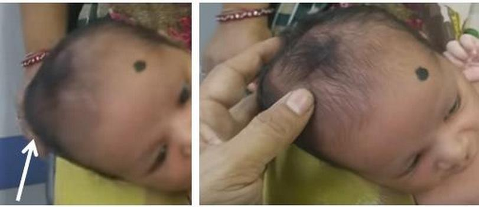
Vraag 54
De gezonde neonaat kan normaal gesproken de eerste uren tot dagen soms bloedsuikerspiegels hebben van 2,6 mmol/l. Hoe komt het dat deze spiegels van nature relatief laag zijn?
Vraag 55
CASUS — Op het diabetesspreekuur van een gynaecoloog verschijnen twee zwangeren. Mevrouw A heeft al meer dan twintig jaar DM type 1 en zit tijdens de zwangerschap vaak hoog met haar bloedsuikers (moeilijk instelbaar). Bij mevrouw B is vrij laat in de zwangerschap GDM vastgesteld op grond van ernstige adipositas; net als mevrouw A gebruikt zij insuline.
Welk kind loopt risico op ernstige hypoglykemie na de geboorte?
Vraag 56
Een baby wordt spontaan in hoofdligging geboren. Men bepaalt de APGAR-score na 1 minuut. De baby ademt dan nog niet zelf, hartactie is ongeveer 90, de kleur is perifeer blauw en centraal roze, ze is slapjes maar er is wel enige flexie van de ledematen en ze vertrekt haar gezichtje bij het prikkelen onder de voetzolen. Wat is deze APGAR-score van 1 minuut?
Vraag 57
Welke omstandigheden veroorzaken perinatale asfyxie door zuurstofnood die pas na de geboorte optreedt? Selecteer er twee.
Meerdere antwoorden mogelijk.
Vraag 58
CASUS — Een zwangere wordt gecontroleerd door de verloskundige. Bij onderzoek van de buik staat de navel halverwege de lijn tussen de bovenrand van de symfyse en de onderrand van het xyfoïd. Uitwendig staat de fundus uteri op 2/3 afstand vanaf de symfyse tot de navel (2/3 NS).
Bij welke amenorroe past deze bevinding?
Vraag 59
Waarom is het relevant dat de aanhechting van de foetale wervelkolom aan de foetale schedel excentrisch is? Deze positie bevordert in belangrijke mate …
Vraag 60
Een zwangere is aan het bevallen op een verlosbed, in halfzittende positie. Welke handeling dient plaats te vinden zodra het kinderlijke hoofdje is geboren in A.a.v. en er in de hals van het kind geen navelstreng palpabel is?
Vraag 61
Wat is van onderstaande opties het meest bewijzend voor peritoneale prikkeling?
Vraag 62
CASUS (er volgen twee vragen) — Een 17-jarig meisje heeft sinds een dag buikpijn die begon bij de navel en naar de onderbuik zakt, vooral rechts. Ze is misselijk maar heeft niet gebraakt en had geen trek in eten. Ze is een jaar seksueel actief en gebruikt de pil; geen afwijkende afscheiding, geen bekende SOA. Urineren is pijnloos maar de urine ziet er donker uit. Ze loopt moeizaam en voorovergebogen; op de onderzoekstafel kan ze alleen met gebogen knieën op de rug liggen en wil haar (vooral rechter) been niet strekken. Het punt van McBurney wordt niet als pijnlijk aangegeven.
Welke waarschijnlijkheidsdiagnose is hier aan de orde?
Vraag 63
CASUS (tweede vraag) — Zelfde 17-jarige patiënte met een dag buikpijn (navel → rechtsonder), misselijk, seksueel actief met pilgebruik, donkere urine, wil het rechter been niet strekken, McBurney niet pijnlijk. Welke kenmerken passen het meest bij de verschillende waarschijnlijkheidsdiagnosen?
Sleep een optie naar de bijbehorende rij, of tik eerst op een kaart en dan op een rij.